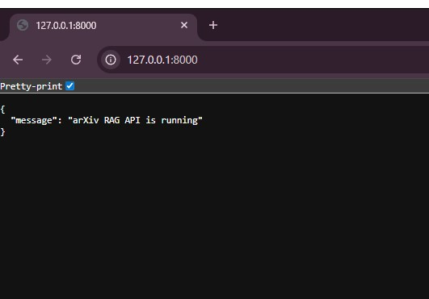
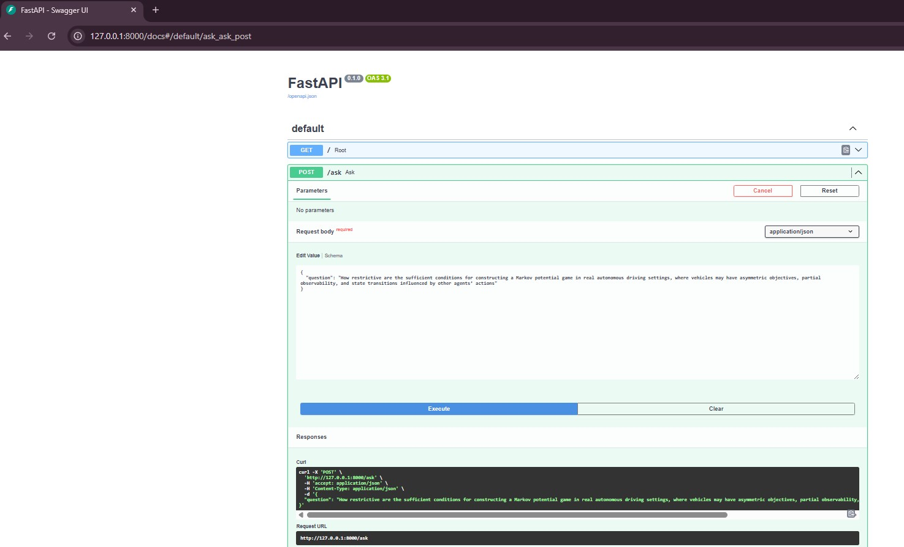
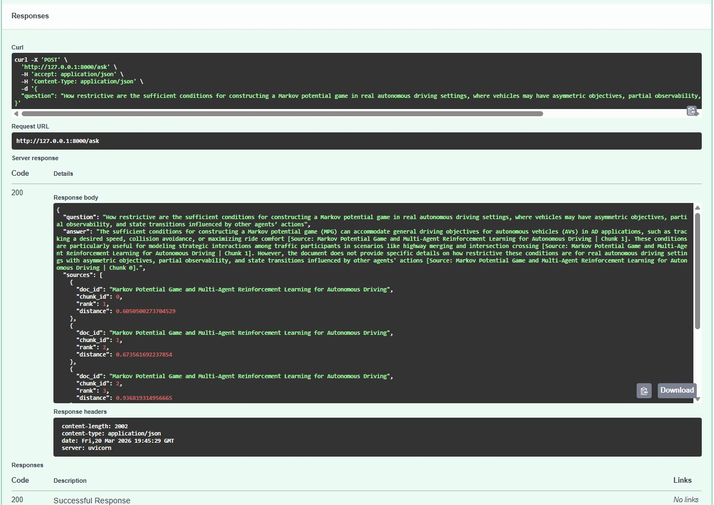
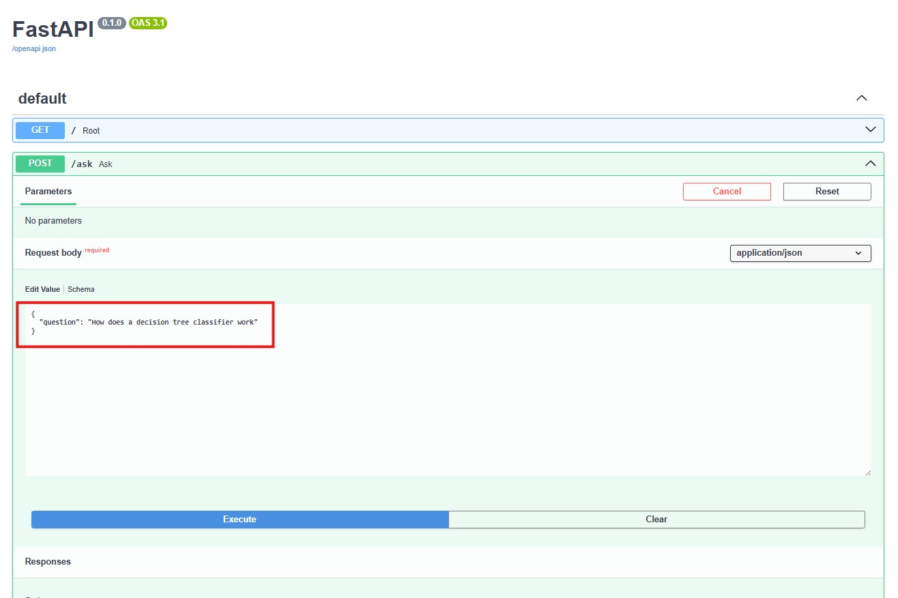
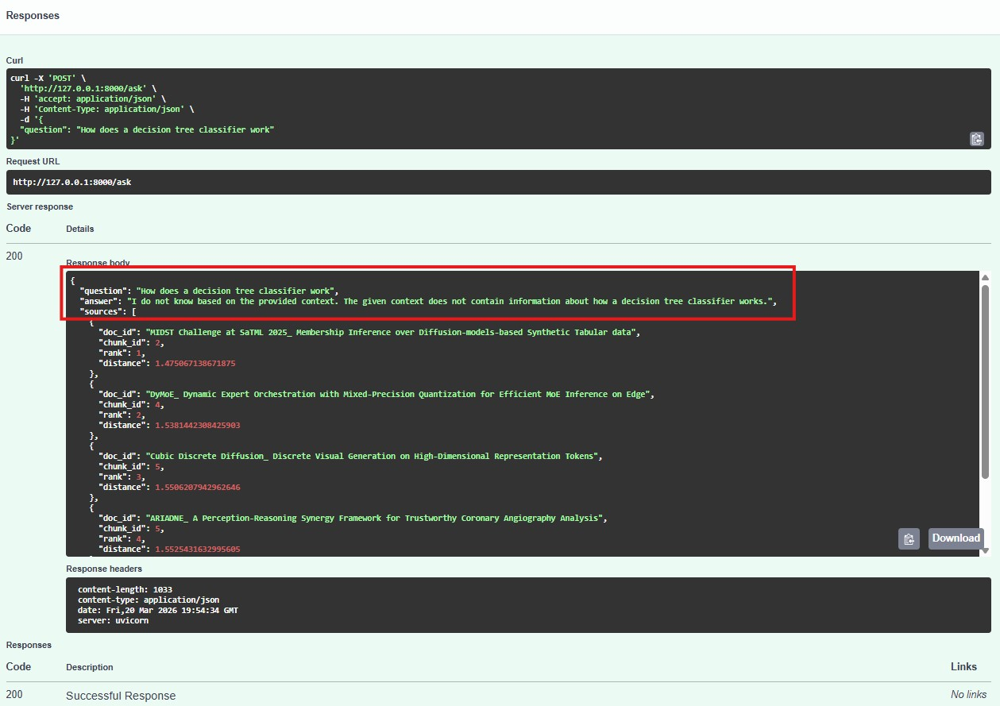

Overview
This project is an end-to-end research assistant built on a Retrieval-Augmented Generation architecture for arXiv papers. It ingests PDFs, extracts and chunks paper text, generates embeddings, indexes them in FAISS, retrieves relevant passages for a user query, and uses a local LLM to generate grounded answers with source citations.
The system is designed to provide reliable responses for valid research queries while also handling unsupported or out-of-scope questions without hallucinating.
Features
- End-to-end RAG pipeline (PDF → embeddings → FAISS → LLM)
- Local inference using GPU
- Grounded answers with source citations
- FastAPI backend with interactive Swagger UI
- Handles unsupported queries without hallucination
Architecture
Dataset
This system was built on a diverse collection of 50+ arXiv papers across:
- Machine Learning and LLMs
- Robotics and Autonomous Systems
- Computer Vision and 3D Generation
- Physics and Mathematics
- Optimization and Systems
Full list: assets/papers.txt
Screenshots
API Running

Valid Query (Input)

Valid Query (Answer with Sources)

Valid Response: assets/valid-response.json
Unsupported Query (Input)

Unsupported Query (Handled Correctly)

Unsupported Response: assets/unsupported-response.json
Tech Stack
- Python
- PyTorch
- Hugging Face Transformers
- FAISS
- FastAPI
- Sentence Transformers
How to Run
# Clone repository
git clone https://github.com/Deepak-Sathyanarayanan/arxiv-rag.git
cd arxiv-rag
# Create virtual environment
python3 -m venv .venv
source .venv/bin/activate
# Install dependencies
pip install -r requirements.txt
# Run API
uvicorn src.api:app --reloadOpen: http://127.0.0.1:8000/docs
Key Highlights
- Built a complete RAG pipeline using local LLMs
- Implemented semantic search using FAISS
- Enabled GPU-based inference for efficient processing
- Designed the system to avoid hallucinations using retrieval constraints
- Evaluated on a diverse multi-domain research dataset